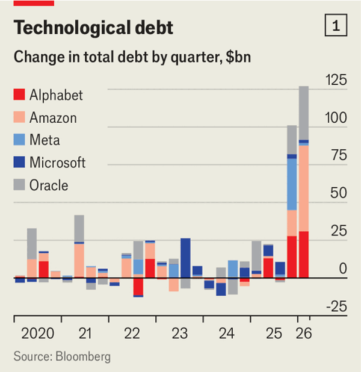
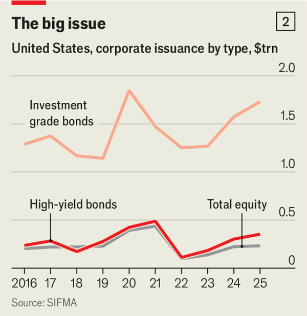
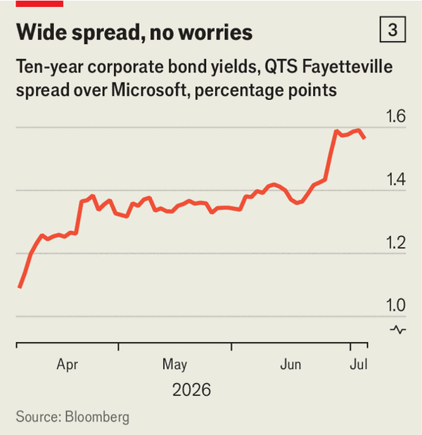

Jul 09, 2026 06:44 AM | New York
THE RAPID spread of new technological infrastructure is usually accompanied by booms in bond markets. The emergence of a liquid market for corporate credit on both sides of the Atlantic in the 19th century reflected the express growth of the railway industry. Before the arrival of railway operators with their vast investment needs—to buy land, lay tracks and ship goods—corporate finance was the province of small banks. Afterwards it became coupled with bond markets, at first nationally, then internationally.

The latest techno-infrastructure frenzy, this time over artificial intelligence, is likewise stoking a bond-market boom (see chart 1). Since January Meta, Nvidia and Oracle have launched individual bond offerings worth $25bn apiece to fund their AI ambitions—more than any of them has ever raised in equity. So has SpaceX, which added the same sum to the $86bn that Elon Musk’s rockets-to-robots business raised from stock-market investors last month. In March Amazon, whose computing cloud hosts lots of AI workloads, sold $37bn in bonds. Alphabet issued a rare 100-year bond worth £1bn ($1.4bn) in Britain in February as part of a £5.5bn debt sale, plus more paper in Swiss francs, days after it raised $20bn at home.
Last year issuance of corporate bonds in America was not far off the all-time high set in 2020 (see chart 2). This year that record will almost certainly be broken, thanks in large part to AI. Morgan Stanley, an investment bank, expects $350bn-400bn in AI-related investment-grade issuance this year in American bond markets. That would be nearly a fifth of the $2.3trn in high-quality dollar-denominated bonds which companies are forecast to sell there in 2026. Another $50bn may come from junk bonds linked to AI projects (out of total high-yield issuance of $440bn).

Such sums explain why the Bank for International Settlements, central banks’ central bank, recently warned that AI projects may not make enough money to repay the debt that financed them. If bond investing is the “negative art” of choosing what to avoid rather than what to buy, as it is sometimes described, how much avoiding must bond investors do?
In some ways, the AI-issuance bonanza makes the corporate-bond market appear a little safer than it was. The total debts of America’s five “hyperscale” cloud giants—Alphabet, Amazon, Meta, Microsoft and Oracle—climbed by $228bn in the six months to March. That is nearly five times more than any such two-quarter increase in the past.
The first four of the hyperscalers have for years churned out more profits than they know what to do with, and so enjoy strong credit ratings. Microsoft’s debt is considered safer than Uncle Sam’s. Only Oracle, the smallest and least profitable of the five, receives a middling “B” grade from big credit-rating agencies (though so do the issuers of about half of American corporate bonds these days).
You might expect a debt-raising boom to raise the spreads on corporate bonds, a measure of their riskiness relative to safe Treasuries. But thanks to the creditworthiness of the largest big-tech issuers, average spreads remain at around 0.8 percentage points, close to the narrowest they have been in a quarter of a century.

Investors are also beginning to be more discerning between the safe debt of the hyperscalers and bonds funding some of the riskier projects with which the tech giants are associated. In April QTS Data Centers, a firm owned by Blackstone, a giant manager of private assets, issued $4.6bn in bonds to fund an immense server farm in Georgia, of which Microsoft will be a client. Initially the bonds’ yield was 1.1 percentage points higher than for the equivalent Microsoft debt. Since then the spread has widened to 1.6 points (see chart 3).
On the surface, the ballooning issuance of riskier debt looks like a bigger cause for concern. The wave of junk bonds, set off last May by a $2bn bond offering from CoreWeave, which rents out top-tier chip capacity, is swelling. In addition, CoreWeave and fellow “neoclouds” like Nebius and Iren have all issued billions of dollars in convertible bonds this year, which investors can swap for a certain number of the issuer’s shares. The division between safer and riskier debt may be misleading, however. Historically, financial instability has tended to build up around assets that investors believe to be safe, not those they already see as sketchy. In this light, the junk bonds are a sign of market adaptation.
When railway defaults surged in the wake of the financial panic of 1873, this eventually led to a worldwide depression. No such cataclysm looks imminent today. It is clear, though, that avoiding duds will be harder than ever. The AI revolution is proceeding at such a blistering pace that some early winners have already turned into losers, then, occasionally, back into winners—and vice versa. Divining which companies will come out on top, and be able to redeem their bonds when they mature in ten, 30 or, in Alphabet’s case, 100 years’ time, will require bond investors to be at their most negatively artful. ■
For more expert analysis of the biggest stories in economics, finance and markets, sign up to Money Talks, our weekly subscriber-only newsletter.